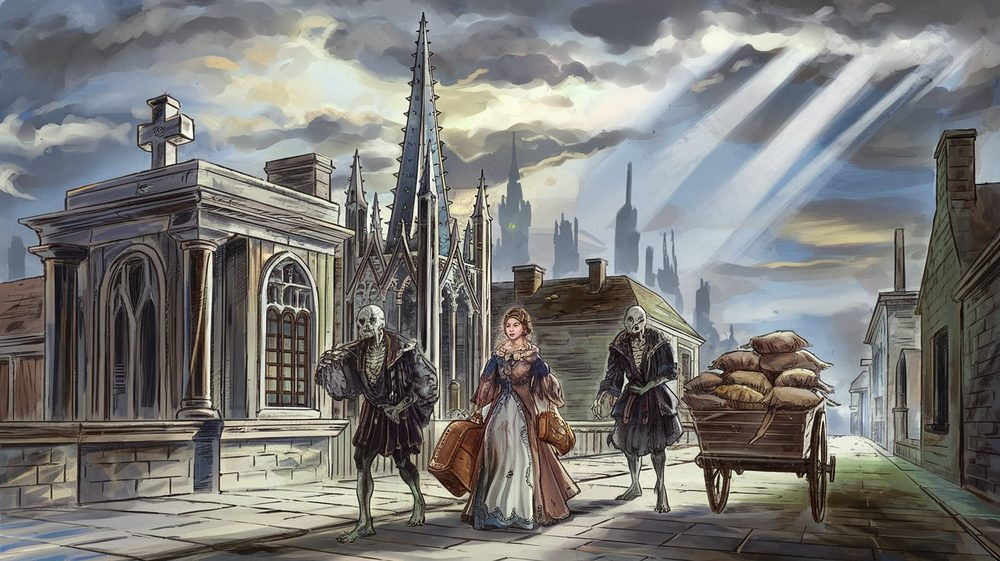

The Old Dominion
Values: Purity, Authority
Symbol: An intricate rune, white on purple
Characteristic class: Fighter
The Old Dominion is an exceedingly ancient aristocratic human empire with a strong emphasis on tradition and ritual. Known in some older texts as the Old Order, it is one of the most powerful and conservative forces in Moonrise. Its capital is the necropolis-city of Hallow, seat of the Archelders and the fountainhead of aristocratic legitimacy to which many neighbouring realms trace their ruling houses by marriage.

Government
The empire is ruled by the Archelders, a large council of ghosts. Those nearing death whom the Archelders deem worthy are given a special ritual which transforms them into a ghost. Their mortal remains are entombed, and the tombs must be regularly maintained to preserve the magic.
Archelder ghosts are bound to remain in the imperial capital and serve the empire. The ritual and the continual communion with other Archelders allows them to maintain a grip on their memories and identities. However, this fidelity is not complete — as Archelders grow older they arise more seldomly and communicate more cryptically.
Decision-making within the Archelders is opaque to outsiders. They communicate their wishes to the Lesser Council, a council of the highest-ranking living nobles.
Social Hierarchy
The empire is characterised by a strong status hierarchy based on ancestry. Distinctions are made throughout, but particularly important is whether one can trace ancestry to an Archelder in the family line. Ranks entitle one to wear different coloured sashes in public.
Surnames are unknown, with individuals distinguished according to their noble titles if possible, or occupations if not.
Religion
Religion within the Old Dominion fits within the general framework of the Old Gods, but characteristically takes the form of ancestor veneration. The Archelders themselves are sometimes prayed to in shrines. Temples of the Old Gods also exist, although this is looked down on by higher ranks as a resort for those who do not know their own ancestors.
Necromancy more generally is publicly practised within the empire, although there are strict lines — not always clear to outsiders — about what is acceptable. In the heartlands, undead labour is used extensively — travellers report seeing peasants working the fields who, on closer inspection, are animated corpses toiling under the direction of ghost-nobles.
Foreign Policy
The Old Dominion is not generally expansionist, but its foreign policy is based on a paranoid fear of change. A significant part of this fear derives from the fact that the Archelders are effectively immortal, but only so long as they maintain control over Hallow. Accordingly, the Old Dominion actively intervenes abroad to empower traditionalist leaders sympathetic to them, and over the centuries has developed numerous allied semi-subject buffer states along its border.
Many ruling families of neighbouring realms — including those of Arrowmoor — trace their lineage back to the great houses of Hallow through centuries of marriage alliance, and look to the Old Dominion as the fountainhead of aristocratic and monarchical tradition. The emergence of The Combine has disrupted this alignment: commercial classes resent the traditional order, and in some realms merchant factions see rapprochement with the Combine as a way to strengthen their hand at court against the Dominion-aligned aristocracy.
Goals
Long-term: Eternal life and reverence for the Archelders.
Proximate: Maintain Old Dominion influence in satellite states. Prevent any other power from achieving dominance.
Timeline
The empire is roughly 2,700 years old — comparable to the span of ancient Egypt under native rule. In that time, the Dominion has had its share of discontinuities, periods of collapse, and foreign conquest, although its official histories gloss over these.
See also
- Arrowmoor — a duchy in the Dominion’s sphere of influence
- History of Moonrise — the Dominion’s role across the ages